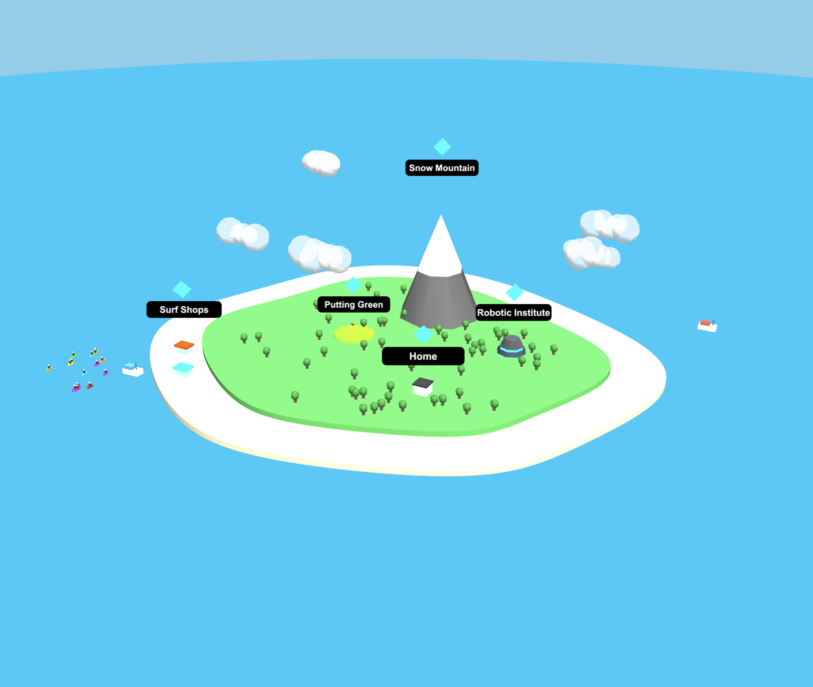
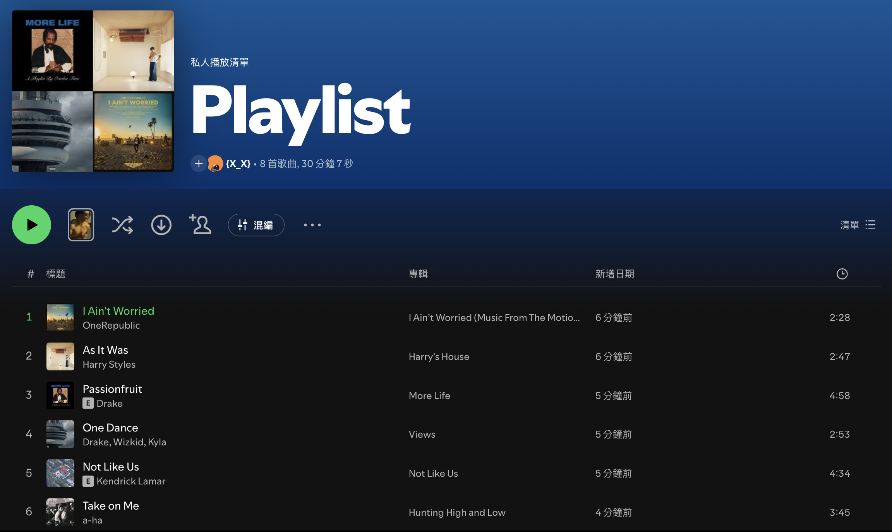
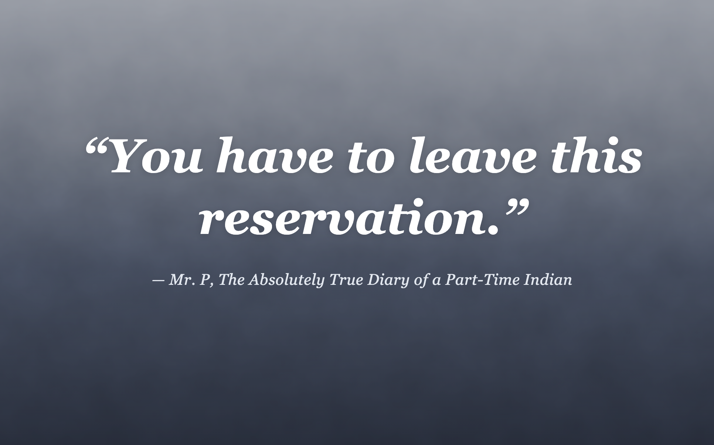

To me, tribes do not only mean the physical tribes you see in your region, but also a group or community you are familiar with. Tribes in this aspect affect my growth and shape my identity as I grow up.
Themes that will be explored are a sense of belonging, identities and finding balance between different worlds. Through my work, I want to define myself as someone who values connection and staying true to myself.
Here, I'm going to showcase 4 pieces that are closely related to my identity, tribes and personalities. These pieces define who I am, shape who I become, and what I value.
Scroll the preview panel on the right to see glimpses of my projects.

Map View Exploration: A preview of the interactive 3D map.

Playlist of Identity: A preview of the playlist.

A Line From Junior: A preview of the quote.
Between Two Worlds: A preview of the two worlds I live in.
This project helped me realize who I am and who I want to become. I will never stop being active—whether it is surfing, golf, or snowboarding, these sports will be a part of my entire life as a way to relax and remind myself of my identity: active, rebellious, and constantly jumping out of the box.
I’ve come to understand that we always hold onto our memories; we just need something at hand to conjure them up. Out of everything, I am most proud of the Playlist project because music is woven into our everyday lives—it is the most efficient way to recall memories and remind ourselves of where we’ve been. This journey completely shifted how I view identity; I learned that who we are is defined by much more than just ourselves. It is beautifully shaped by our environment, our memories, and the tribes we belong to.